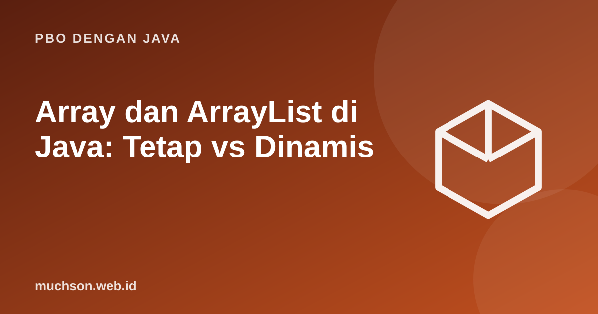

Beranda › Artikel › PBO dengan Java
PBO dengan JavaArray dan ArrayList di Java: Tetap vs Dinamis
Larik (array) adalah kumpulan elemen bertipe sama dengan ukuran tetap; ArrayList membungkusnya agar bisa tumbuh dan menyusut. Memahami keduanya, termasuk di mana datanya disimpan dan apa yang terjadi saat menyalin, mencegah banyak bug.
Sebaiknya sudah paham: kontrol alur Java

Tujuan belajar
Setelah membaca dan mencoba materi ini, Anda mampu:
- mendeklarasikan, mengisi, dan menelusuri array
- memakai array dua dimensi
- memakai ArrayList dan metode utamanya
- memahami boxing dan wrapper type
- menyalin, mencari, dan mengurutkan dengan Arrays dan Collections
Array
import java.util.Arrays;
public class Main {
public static void main(String[] args) {
int[] nilai = new int[5]; // lima elemen, bernilai 0
int[] skor = {80, 95, 70, 88}; // literal
nilai[0] = 10;
System.out.println("panjang skor: " + skor.length);
int total = 0;
for (int s : skor) total += s;
System.out.println("rata-rata: " + (double) total / skor.length);
System.out.println(Arrays.toString(nilai));
Arrays.sort(skor);
System.out.println(Arrays.toString(skor));
System.out.println("indeks 88: " + Arrays.binarySearch(skor, 88)); // hanya pada larik terurut
try { System.out.println(skor[4]); }
catch (ArrayIndexOutOfBoundsException e) { System.out.println("di luar batas: " + e.getMessage()); }
}
}panjang skor: 4
rata-rata: 83.25
[10, 0, 0, 0, 0]
[70, 80, 88, 95]
indeks 88: 2
di luar batas: Index 4 out of bounds for length 4
Menyalin array: referensi vs isi
import java.util.Arrays;
public class Main {
public static void main(String[] args) {
int[] a = {1, 2, 3};
int[] alias = a; // bukan salinan
int[] salinan = Arrays.copyOf(a, a.length);
a[0] = 99;
System.out.println(alias[0] + " " + salinan[0]);
}
}99 1
Array dua dimensi
import java.util.Arrays;
public class Main {
public static void main(String[] args) {
int[][] m = {{1, 2, 3}, {4, 5, 6}};
System.out.println(m.length + " baris, " + m[0].length + " kolom");
int[][] t = new int[3][2]; // transpos
for (int i = 0; i < m.length; i++)
for (int j = 0; j < m[i].length; j++)
t[j][i] = m[i][j];
System.out.println(Arrays.deepToString(t));
}
}2 baris, 3 kolom
[[1, 4], [2, 5], [3, 6]]
ArrayList
import java.util.ArrayList;
import java.util.Collections;
import java.util.List;
public class Main {
public static void main(String[] args) {
List<String> daftar = new ArrayList<>();
daftar.add("Citra");
daftar.add("Ani");
daftar.add("Budi");
daftar.add(1, "Dewi"); // sisip di indeks 1
System.out.println(daftar + " ukuran " + daftar.size());
daftar.remove("Ani");
Collections.sort(daftar);
System.out.println(daftar + " ada Budi? " + daftar.contains("Budi") + " indeks Dewi: " + daftar.indexOf("Dewi"));
List<Integer> angka = new ArrayList<>(List.of(5, 3, 8));
angka.add(1); // boxing otomatis: int -> Integer
int jumlah = 0;
for (int x : angka) jumlah += x; // unboxing otomatis
System.out.println(angka + " jumlah " + jumlah);
angka.remove(Integer.valueOf(8)); // hapus NILAI 8
angka.remove(0); // hapus INDEKS 0
System.out.println(angka);
}
}[Citra, Dewi, Ani, Budi] ukuran 4
[Budi, Citra, Dewi] ada Budi? true indeks Dewi: 2
[5, 3, 8, 1] jumlah 17
[3, 1]
Mana yang dipilih?
| Aspek | Array | ArrayList |
|---|---|---|
| Ukuran | Tetap sejak dibuat | Tumbuh dan menyusut otomatis |
| Tipe elemen | Primitif atau objek | Hanya objek (wrapper untuk primitif) |
| Sintaks | a[i], a.length | list.get(i), list.size() |
| Performa | Sedikit lebih cepat dan hemat untuk primitif | Cukup untuk hampir semua kasus |
| Cocok untuk | Data berukuran tetap, performa tinggi, matriks | Daftar yang jumlahnya berubah |
Kompleksitas
Operasi add di akhir ArrayList berbiaya O(1) teramortisasi, sedangkan sisip atau hapus di tengah O(n) karena elemen digeser. Pencarian dengan contains adalah O(n).
Latihan mandiri3. Hapus semua nilai genap dari List
Coba kerjakan dulu sebelum membuka jawaban.
1. Tulis metode yang mencari nilai maksimum dalam int[].
Inisialisasi dengan elemen pertama lalu bandingkan satu per satu.
2. Balik isi sebuah int[] di tempat.
Tukar elemen i dengan n−1−i hingga tengah.
3. Hapus semua nilai genap dari List.
angka.removeIf(x -> x % 2 == 0);4. Apa yang terjadi bila memanggil list.get(5) pada list berukuran 3?
IndexOutOfBoundsException dilempar.
Ringkasan
- Array: ukuran tetap, cepat; ArrayList: dinamis, lebih nyaman.
- Penugasan array menyalin referensi, bukan isi; gunakan Arrays.copyOf.
- Wrapper type dan boxing menjembatani primitif dengan koleksi.
- Array.sort, binarySearch, dan Collections.sort tersedia di pustaka standar.
Tanya jawab
Apakah ArrayList memakai array di dalamnya?
Ya. Ketika kapasitas habis, ia membuat array lebih besar dan menyalin isinya.
Kapan memakai LinkedList?
Jarang. ArrayList biasanya lebih cepat karena lokalitas memori, bahkan untuk banyak kasus sisip.
Bagaimana membuat list tidak dapat diubah?
Gunakan List.of(...) atau Collections.unmodifiableList.
Referensi
- Oracle: Arrays (Java Tutorials)
- Java SE API: ArrayList
- Java SE API: Arrays
- Sedgewick dan Wayne, Introduction to Programming in Java